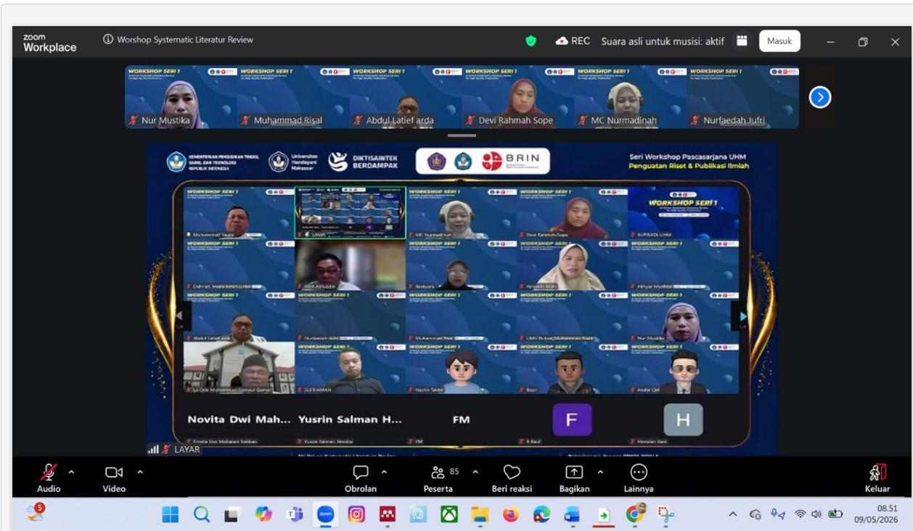

Makassar, 4 Mei 2026 – Dalam upaya meningkatkan kualitas riset dan publikasi ilmiah, Program Pascasarjana Universitas Handayani Makassar (UHM) menyelenggarakan Workshop Seri 1 Penguatan Riset & Publikasi Ilmiah dengan tema "AI-Driven Systematic Literature Review for High-Quality Publication".
Kegiatan ini merupakan hasil kolaborasi antara Universitas Handayani Makassar, Pusat Riset Sains Data dan Informasi (PRSDI) BRIN, serta Universitas Dayanu Ikhsanuddin dalam mendukung pengembangan budaya riset yang berkualitas.
Workshop ini ditujukan bagi dosen dan mahasiswa yang ingin mendalami teknik Systematic Literature Review (SLR) menggunakan Artificial Intelligence (AI) untuk menghasilkan publikasi ilmiah berkualitas pada jurnal bereputasi.
Kegiatan ini diselenggarakan secara gratis. Peserta diharapkan melakukan pendaftaran sebelum batas waktu yang telah ditentukan.
Melalui kegiatan ini, Universitas Handayani Makassar terus berkomitmen mendukung peningkatan kualitas penelitian, publikasi ilmiah, serta pemanfaatan teknologi Artificial Intelligence dalam dunia akademik.
Artificial Intelligence (AI), BRIN, Systematic Literature Review, Workshop Publikasi Ilmiah, Universitas Handayani Makassar